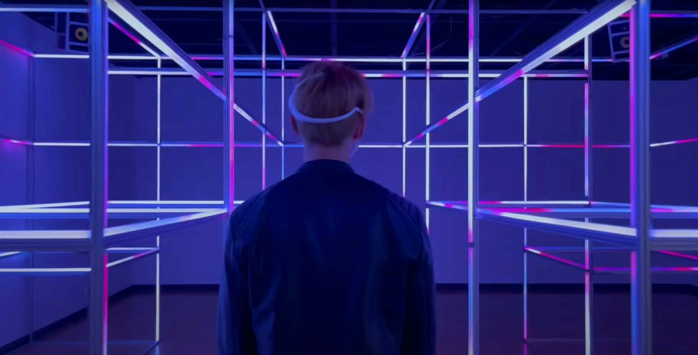

[Completed] 관객 뇌파 EEG 데이터를 활용한 뉴로피드백 미디어아트
공동연구자 / 2021.01.01 ~ 2021.04.30 / 예술의전당 (KRW 50 million)
관객 뇌파 EEG 데이터를 활용한 뉴로피드백 미디어아트 (Neurofeedback Media Art Using Audience EEG Data)기간: 2021.01. ~ 2021.04.
Funding: Seoul Arts Center (KRW 50 million)
신명: 풀림과 맺음 프로젝트는 관객 뇌파 EEG 데이터를 활용한 미디어아트 경험을 구현합니다. 관객이 굿 음악을 들을때 측정되는 뇌파 EEG 데이터 딥러닝 분석을 통해 정서(예: 행복, 슬픔, 놀람, 혐오, 분노, 공포)를 분석하고 이를 LED 색상, 속도, 모양으로 시각화합니다. 이러한 뉴로피드백 메커니즘을 통해 관객은 자신만의 미디어아트를 경험하고 완성해 나갈 수 있습니다.
English Summary:
Shin Myung: Unleashing and Consolidating Project implements a media art experience using audience brainwave EEG data. Emotions (e.g., happiness, sadness, surprise, disgust, anger, fear) are analyzed through deep learning analysis of EEG data, which is measured when the audience listens to Korean ritual music (a.k.a. gut), and visualizes them with LED color, speed, and shape. Through this neurofeedback mechanism, the audience can experience and complete their own media art.
